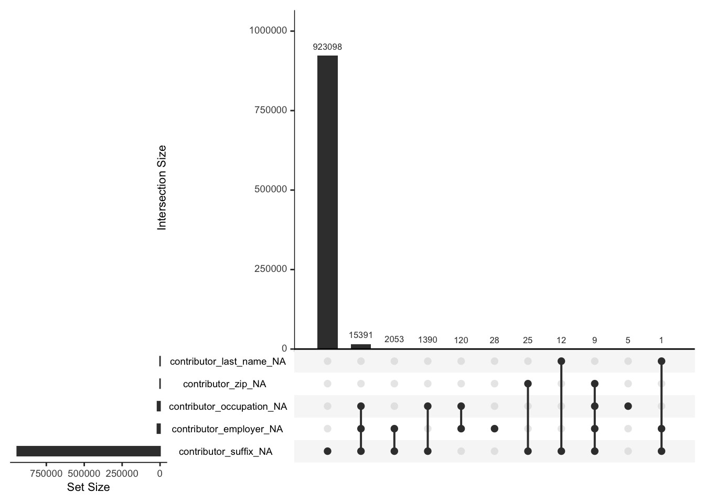

Chapter 4 Missing values
4.1 Contribution Receipt Dataset
Among the dataset we used, only the contribution receipts dataset has missing values. A total of 16,969 values were missed in 4 columns which are contribution_occupation, contribution_zip, contribution_last_name, and contribution_city.
| column | count |
|---|---|
| contributor_occupation | 16915 |
| contributor_zip | 34 |
| contributor_last_name | 13 |
| contributor_city | 7 |

In the processed contributions dataset, missing values take 1.79% of the entire dataset consisting 946,704 observations and 12 attributes. As shown in the table and the upset plot above, the contribution_occupation column has the most missing values. It is possible that contributors might not be comfortable providing their occupation information, and the dataset has more records where the contribution_occupation column was filled with INFORMATION REQUESTED. The missingness in this column seems to be a result of the registrar accidentally not putting an INFORMATION REQUESTED tag for these records.
The vertical bars of the upset plot shows patterns of missingness and their frequencies. The most popular pattern is only missing the contributor occupation information, which 16,905 entries share this pattern. Besides there are also 25 entries only missing zip code information, 13 entries only missing last name information, 9 entries missing both occupation and zip information, 6 entries only missing city information, and one entry missing both city and occupation information.